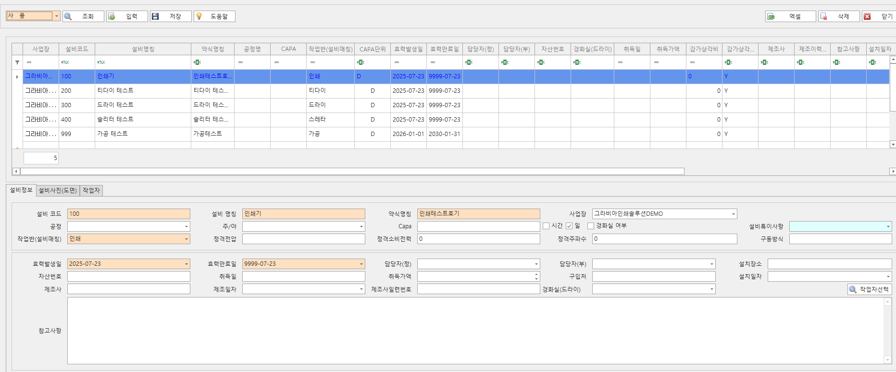
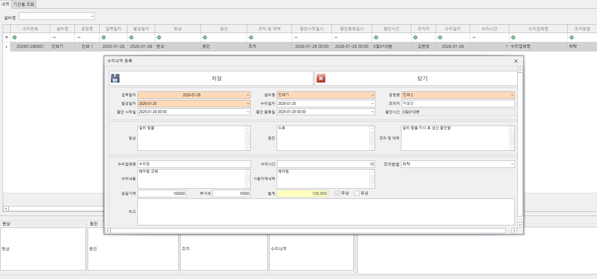
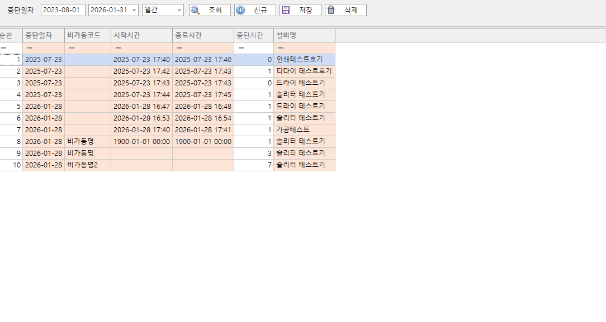

설비 관리
설비의 가동 상태와 유지보수 이력을 통합해 안정적인 생산 운영을 지원합니다.
설비 관리 화면

설비정보
- 설비 정보를 등록/조회 할 수 있습니다.

수리내역등록
- 설비 수리 내역을 등록/조회 할 수 있습니다.
- 처리 비용 및 처리 시간을 관리할 수 있습니다.

비가동등록/확인
- 비가동 내역을 수동으로 등록/수정합니다.
- 생산 실적 등록 시 입력한 비가동 내역을 확인하고 수정할 수 있습니다.